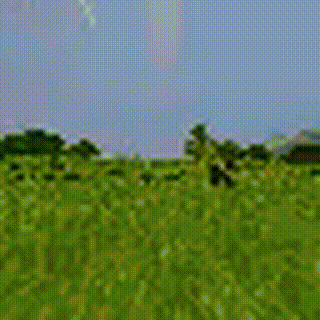
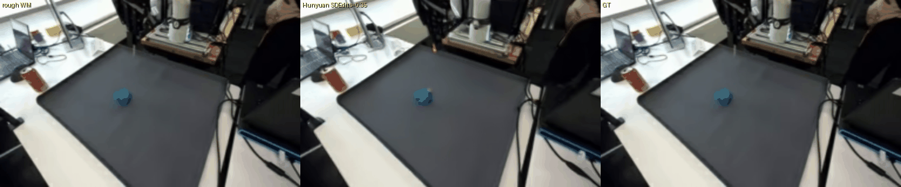
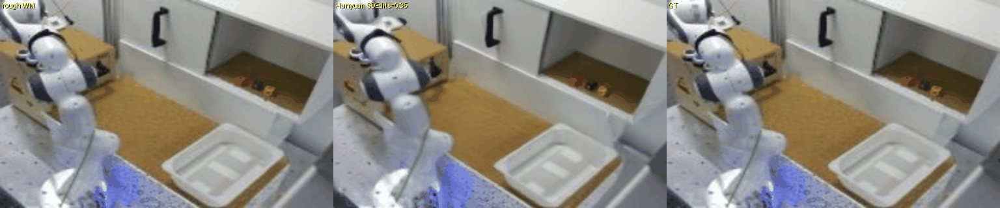

RGB is ambiguous
One frame can correspond to many depths, poses, and contact states. Prediction quality should not depend on appearance alone.
WM3D / Native-3D robot world model
Robots do not act on pixels. WM3D predicts depth, camera pose, point geometry, robot state, task text, and future action chunks — then treats RGB video as a rendered view of that imagined world.

Problem framing
For manipulation, the causal object is the scene geometry: where the gripper is, where objects are, how depth changes, and which action moved them. A visually plausible clip can still hide the wrong state.
One frame can correspond to many depths, poses, and contact states. Prediction quality should not depend on appearance alone.
Pure video-world models can learn texture dynamics while leaving action→geometry as an implicit byproduct of matching frames.
To propose, imagine, rank, and execute actions, a world model must expose geometry, progress, feasibility, and policy interfaces.
Can a robot world model keep native 3D as the core state while still producing action-aware, high-quality RGB rollouts?
World-model landscape
The page compares three families by what they choose as “the world.” WM3D's differentiator is that video is a read-out; the owner state remains explicit 3D.
Representative systems emphasize future frames or latent video tokens.
WM3D keeps the world explicit: depth, point geometry, camera/robot pose, task text, and future action chunks.
Low-dimensional dynamics are efficient for control, but can lose the rich visuospatial structure of manipulation scenes.
Design lesson from modern video-action models: action must interact with the generative video path, not arrive as a weak late adapter. WM3D's difference: that path is added beside a native-3D core, not instead of it.
Technical route
The architecture separates state ownership from visual rendering: WM3D models geometry and action, while the RGB branch renders a view of the rollout.
The core is trained on native-3D supervision, not only RGB reconstruction.
Future action chunks are first-class inputs for predicting how the scene changes.
A stronger action-aware RGB branch supplies visual fidelity while staying downstream of the world state.
RGB rollouts demonstrate the rendering path. The central WM3D claim remains native-3D state prediction and action-conditioned geometry, reported separately from closed-loop policy results.
Scale and cache
The pipeline converts robot videos into reusable native-3D supervision, so large action-labeled windows can train without running the 3D foundation model online.
Evidence with claim boundaries
The result story is deliberately split: open-loop future prediction, native-3D action sensitivity, RGB rendering, and closed-loop policy success should not be collapsed into one overclaim.
Open-loop future prediction
This table is about future prediction quality only: context 16 frames, future 8 frames, balanced OXE/DROID evaluation.
| Metric | WM3D | Last-frame | Delta |
|---|---|---|---|
| PSNR ↑ | 28.374 | 23.285 | +21.9% |
| SSIM ↑ | 0.9135 | 0.8744 | +4.5% |
| LPIPS ↓ | 0.0985 | 0.1199 | −17.9% |
| RGB L1 ↓ | 0.0199 | 0.0321 | −38.1% |
| Motion RGB L1 ↓ | 0.0648 | 0.1409 | −54.0% |
| R3D18-FVD ↓ | 22.037 | 28.157 | better |
I3D-FVD is not emphasized because it favors low-motion baselines in this setting.
Native-3D action sensitivity
This is the core native-3D evidence: action changes are measured in tokens, depth, depth-change, and moving regions — not just rendered texture.
| Metric | Value | Reading |
|---|---|---|
| Depth future L1 ↓ | 0.02659 | future depth is directly supervised |
| Depth-change cosine ↑ | 0.6735 | captures how geometry changes |
| Depth-change sign acc ↑ | 0.8193 | direction of change is reliable |
| Real-action token win ↑ | 0.8650 | real actions beat counterfactual alternatives |
| Real-action depth win ↑ | 0.7825 | action affects geometry, not just texture |
| Motion-region depth win ↑ | 0.7708 | effect remains in moving regions |
These numbers support native-3D dynamics and action-conditioned controllability. They are not a substitute for closed-loop robot success.
Downstream benchmark: the current best LIBERO spatial policy chain reaches 384/500 = 76.8% over 500 episodes. The important lesson is also negative: lower offline loss did not reliably predict higher rollout success, so WM3D tracks policy evaluation separately from reconstruction metrics.
Visual evidence
Robot clips show imagined futures against real futures. The Minecraft clip adds a discrete long-horizon task: craft a table, then place it in the world.



The Minecraft clip is included as a qualitative task-domain demo rather than a benchmark claim; the quantitative evidence remains separated in the results section above.
Rendering layer
The visual layer turns WM3D's rough future into a more detailed RGB clip. The latest architecture keeps this branch action-aware while preserving native-3D ownership.


Earlier rendering demos show the role of a video prior. The current improvement is structural: the RGB branch is trained as action-video modeling rather than a passive post-processor.
Current boundary
WM3D is strongest when the presentation keeps each claim tied to its own evidence source.
WM3D reframes robot world modeling as a state-space problem: predict the future in native 3D, use actions as interventions on geometry, and render video as a view of the imagined world.
Open-loop prediction and counterfactual action metrics support the central claim.
The RGB branch is presented as a rendering layer for imagined state, not as a replacement for the native-3D model.
The next goal is to make world-model imagination improve policy selection reliably, not just offline metrics.